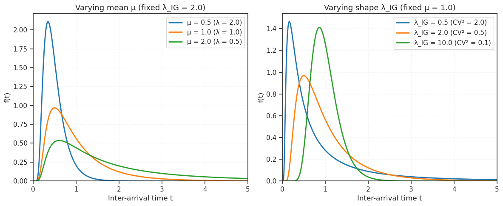
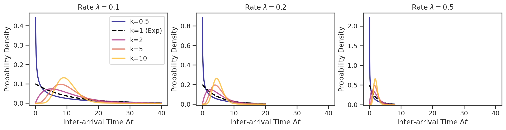
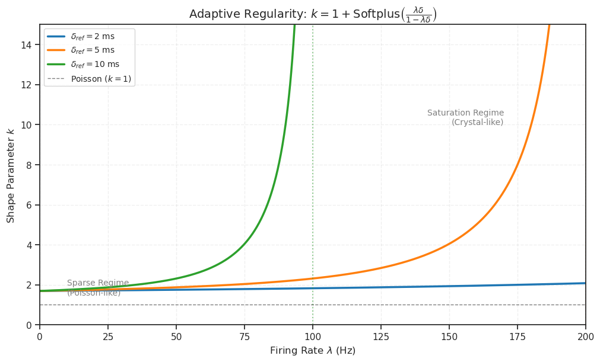
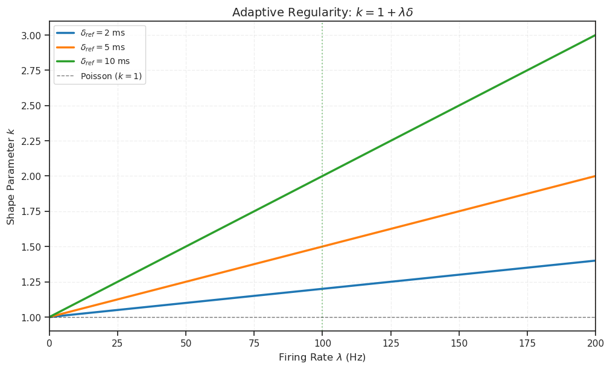

(30) Gamma vs Exp: inter-event intervals#
Project: _GammaRenewalVAE
# HIDE CODE
project_name = '_GammaRenewalVAE'
import os, pathlib
from IPython.display import display
# tmp & extras dir
_jb_dir = pathlib.Path(os.environ['HOME'])
_jb_dir /= 'Dropbox/git/jb-progress-2026'
extras_dir = _jb_dir / '_extras'
fig_base_dir = _jb_dir / 'figs'
tmp_dir = _jb_dir / 'tmp'
# GitHub
from gra.utils.plotting import *
# warnings, tqdm, & style
warnings.filterwarnings('ignore', category=DeprecationWarning)
warnings.filterwarnings('ignore', category=FutureWarning)
warnings.filterwarnings('ignore', category=UserWarning)
from rich.jupyter import print
%matplotlib inline
set_style()
device_idx = 0
device = f'cuda:{device_idx}'
# dtype = torch.bfloat16 # half the size of float32
dtype = torch.float32
print(f"device: {device}, dtype: {dtype} ——— host: {os.uname().nodename}")
device: cuda:0, dtype: torch.float32 ——— host: mach
Inverse Gaussian#
import numpy as np
import matplotlib.pyplot as plt
from scipy.stats import invgauss
# Set up the figure
fig, axes = plt.subplots(1, 2, figsize=(12, 5))
t = np.linspace(0.001, 5, 1000)
# Left plot: Fix λ_IG, vary μ (i.e., vary firing rate λ = 1/μ)
ax1 = axes[0]
lambda_ig = 2.0 # Fixed shape parameter
for mu in [0.5, 1.0, 2.0]:
# scipy's invgauss uses different parametrization: mu_scipy = mu / lambda_ig
# and scale = lambda_ig * mu^2 / lambda_ig = mu
# Actually scipy uses: f(x, mu) with scale, where mu_scipy = 1/sqrt(lambda_ig) * (1/mu_physical)
# Let me just compute directly
pdf = np.sqrt(lambda_ig / (2 * np.pi * t**3)) * np.exp(-lambda_ig * (t - mu)**2 / (2 * mu**2 * t))
rate = 1/mu
ax1.plot(t, pdf, label=f'μ = {mu} (λ = {rate:.1f})', linewidth=2)
ax1.set_xlabel('Inter-arrival time t', fontsize=12)
ax1.set_ylabel('f(t)', fontsize=12)
ax1.set_title(f'Varying mean μ (fixed λ_IG = {lambda_ig})', fontsize=13)
ax1.legend()
ax1.set_xlim(0, 5)
ax1.set_ylim(0, None)
ax1.grid(True, alpha=0.3)
# Right plot: Fix μ, vary λ_IG (regularity parameter)
ax2 = axes[1]
mu = 1.0 # Fixed mean
for lambda_ig in [0.5, 2.0, 10.0]:
pdf = np.sqrt(lambda_ig / (2 * np.pi * t**3)) * np.exp(-lambda_ig * (t - mu)**2 / (2 * mu**2 * t))
cv2 = mu / lambda_ig
ax2.plot(t, pdf, label=f'λ_IG = {lambda_ig} (CV² = {cv2:.1f})', linewidth=2)
ax2.set_xlabel('Inter-arrival time t', fontsize=12)
ax2.set_ylabel('f(t)', fontsize=12)
ax2.set_title(f'Varying shape λ_IG (fixed μ = {mu})', fontsize=13)
ax2.legend()
ax2.set_xlim(0, 5)
ax2.set_ylim(0, None)
ax2.grid(True, alpha=0.3)
plt.tight_layout()
# plt.savefig('/home/claude/ig_pdf.png', dpi=150, bbox_inches='tight')
plt.show()
# print("Plot saved!")

Plot Gamma#
from scipy.stats import gamma
import math
def plot_gamma_families(rates, ks, n_cols=3):
"""
Plots Gamma distribution families for different firing rates and shape parameters.
Parameters:
- rates: list of rates (lambda) [events/unit_time]
- ks: list of shape parameters (k)
- n_cols: number of columns in the subplot grid
"""
n_plots = len(rates)
n_rows = math.ceil(n_plots / n_cols)
# Create figure
fig, axes = create_figure(
n_rows,
n_cols,
sharex='all',
figsize=(4 * n_cols, 3 * n_rows),
dpi=200,
)
axes_flat = np.atleast_1d(axes).flatten()
# Color palette for k != 1
# We exclude black/gray to reserve it for k=1
colors = plt.cm.plasma(np.linspace(0, 0.85, len(ks)))
for i, rate in enumerate(rates):
ax = axes_flat[i]
# Dynamic x-range:
# Plot up to 4 times the mean interval (1/rate) to show the tail
x_max = 4.0 / rate
x = np.linspace(0, x_max, 500)
for j, k in enumerate(ks):
# Biophysical mapping:
# Mean Interval mu = k * theta
# Rate lambda = 1 / mu => mu = 1/lambda
# Therefore: theta = 1 / (k * lambda)
theta = 1.0 / (k * rate)
y = gamma.pdf(x, a=k, scale=theta)
# Styling logic
if k == 1:
ax.plot(x, y, color='black', linestyle='--', linewidth=2, label=f'k={k} (Exp)')
else:
ax.plot(x, y, color=colors[j], linestyle='-', linewidth=2, alpha=0.8, label=f'k={k}')
ax.set_title(f"Rate $\lambda = {rate}$")
ax.set_xlabel("Inter-arrival Time $\Delta t$")
ax.set_ylabel("Probability Density")
# ax.set_xlim(0, x_max)
ax.set_ylim(bottom=-0.01)
# Only add legend to the first plot to avoid clutter
if i == 0:
ax.legend()
# Hide unused subplots
for j in range(i + 1, len(axes_flat)):
axes_flat[j].axis('off')
return fig
# --- Usage Example ---
lambdas = [0.1, 0.2, 0.5]
shapes = [0.5, 1, 2, 5, 10]
fig = plot_gamma_families(lambdas, shapes, n_cols=3)
plt.show()

plot adaptive selection of k#
Formula:
\(k = 1 + \text{Softplus}\left( \frac{\lambda \delta_{\text{ref}}}{1 - \lambda \delta_{\text{ref}}} \right).\)
import numpy as np
import matplotlib.pyplot as plt
def softplus(x):
# Numerical stability for large x
return np.where(x > 20, x, np.log(1 + np.exp(x)))
def calculate_k(lam, delta_ref, use_softplus=True):
# The argument of the softplus: x = (lambda * delta) / (1 - lambda * delta)
# Note: This has a singularity at lambda = 1/delta.
# Physically, lambda cannot exceed 1/delta.
product = lam * delta_ref
if use_softplus:
# We mask values where rate exceeds physical limit
denominator = 1 - product
# Initialize k with NaNs (for plotting gaps)
k_values = np.full_like(lam, np.nan)
# Only compute for valid physically possible rates
valid = denominator > 0
argument = (product[valid]) / denominator[valid]
k_values[valid] = 1 + softplus(argument)
else:
k_values = 1 + product
return k_values
def visualize_adaptive_regularity(use_softplus=True):
"""
Visualizes the adaptive regularity k as a function of firing rate lambda
for different refractory periods delta_ref.
"""
# 1. Setup the Plot Domain
# We'll look at rates from 0 to 200 Hz
lambdas = np.linspace(0, 200, 1000)
# 2. Define Refractory Periods to compare (in seconds)
deltas = [0.002, 0.005, 0.010] # 2ms, 5ms, 10ms
colors = ['#1f77b4', '#ff7f0e', '#2ca02c']
fig, ax = create_figure(figsize=(10, 6), dpi=100)
# 3. Plot Curves
for delta, color in zip(deltas, colors):
k = calculate_k(lambdas, delta, use_softplus=use_softplus)
# Calculate the asymptote (max physical rate)
max_rate = 1/delta
plt.plot(lambdas, k, label=f'$\\delta_{{ref}} = {delta*1000:.0f}$ ms', color=color, linewidth=2.5)
# Add vertical line for asymptote
if max_rate <= 200:
plt.axvline(max_rate, color=color, linestyle=':', alpha=0.5)
# 4. Styling
if use_softplus:
lbl = r"$k = 1 + \text{Softplus}\left( \frac{\lambda \delta}{1 - \lambda \delta} \right)$"
else:
lbl = r"$k = 1 + \lambda \delta$"
plt.title('Adaptive Regularity: ' + lbl, fontsize=14)
plt.xlabel(r'Firing Rate $\lambda$ (Hz)', fontsize=12)
plt.ylabel(r'Shape Parameter $k$', fontsize=12)
# Add Poisson Baseline
plt.axhline(1, color='black', linestyle='--', linewidth=1, alpha=0.5, label='Poisson ($k=1$)')
if use_softplus:
plt.ylim(0, 15)
# Annotation for regimes
plt.text(10, 1.5, 'Sparse Regime\n(Poisson-like)', fontsize=10, color='gray')
plt.text(170, 10, 'Saturation Regime\n(Crystal-like)', fontsize=10, color='gray', ha='right')
else:
pass
# plt.ylim(0, 5)
plt.xlim(0, 200)
plt.legend(fontsize=10, loc='upper left')
plt.grid(True, which='both', linestyle='--', alpha=0.3)
plt.show()
visualize_adaptive_regularity(use_softplus=True)
visualize_adaptive_regularity(use_softplus=False)
/tmp/ipykernel_939540/3456889715.py:7: RuntimeWarning: overflow encountered in exp
return np.where(x > 20, x, np.log(1 + np.exp(x)))

